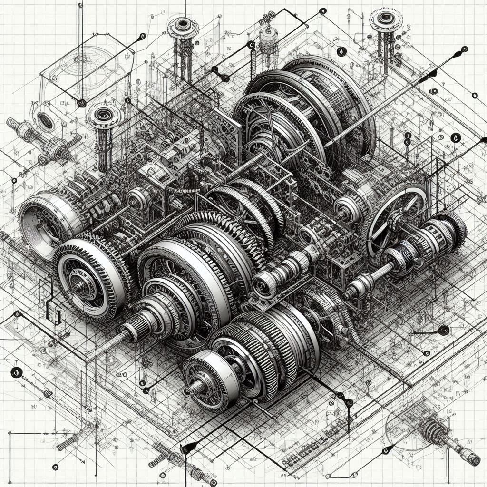
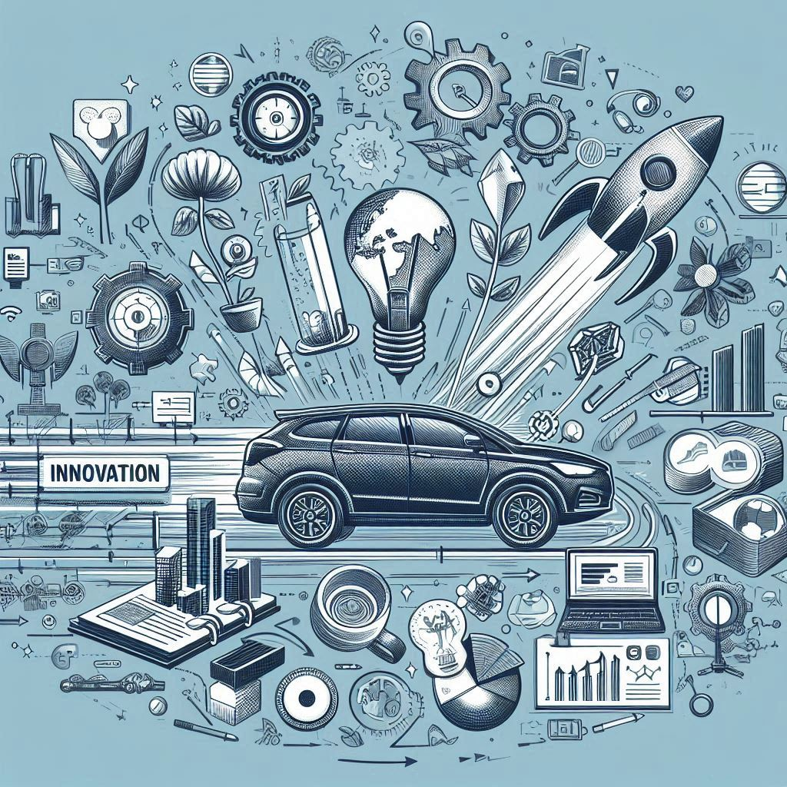

From concept to certified design — faster.

Integrated designs that meet specification and perform reliably in the field.

Advanced energy management systems — monitoring, optimisation, and performance at scale.

Turn strategic intent into a structured innovation programme that delivers return on investment.

Build lasting in-house capability with hands-on training engineered around your team's goals.

We are a handpicked team of highly qualified engineers committed to multi-disciplinary excellence
Contact Us